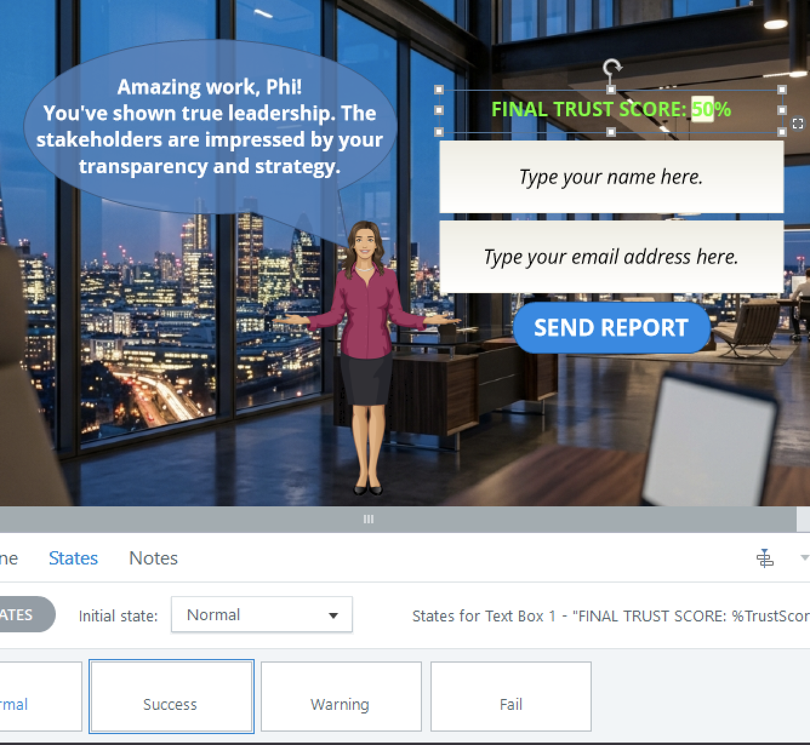

🚀 Project Executive Summary: TITANIUM
The Meta-Challenge: Beyond the SCORM "Black Box"
Standard eLearning development often hits a data wall: we know if a learner finished, but we have zero visibility into their decision-making logic. For high-stakes sales negotiation, "completion" is a vanity metric; behavioral insight is the real ROI.
The Architecture: A High-Fidelity Serverless Pipeline
I engineered Titanium V9.0 (Ironclad Edition), a professional-grade simulator powered by a custom JavaScript (ES6) Data Bridge and an n8n Serverless Pipeline.
- Technical Edge: Bypassed SCORM "Black Box" limitations using asynchronous JSON payloads to a dedicated n8n webhook.
- Enterprise Integrity: Implemented Cross-Node Referencing in n8n, ensuring 100% data fidelity across parallel execution branches (Sheets + Notifications).
Strategic Impact: From Assessment to Predictive Analytics
The 48-Hour Window: Achieved 100% visibility into learner behavior, identifying struggling representatives within 48 hours—a 90% improvement.
Measurable Mastery: Developed a dynamic "TrustScore" system quantifying "Yes-man" vs. "Strategic Negotiator" archetypes for actionable performance data.
Senior Architect’s Takeaway: Titanium V9.0 isn't just a training module; it's a Hardened Diagnostic Engine. It proves that a "Senior" approach isn't about more content, but about architectural resilience—ensuring that every behavioral data point is captured, sanitized, and transformed into an expert strategic verdict.
LXD Architect
Gemini 1.5 Flash
Hardened n8n
ES6 V5.0
The Challenge
In high-pressure corporate environments, the way a lead handles a "Friday Night Crisis" defines the long-term health of the team. Standard e-learning (video + quiz) fails to capture the psychological stakes of real-time negotiation. Learners need an environment where their choices have immediate, visible consequences on stakeholder trust.
Simulate the "Trust Factor" between a Project Lead, a Client, and their internal Team using a dynamic multi-variable scoring system.
Technical Architecture
To overcome traditional SCORM limitations, I engineered a serverless data pipeline. This architecture enables granular tracking of every learner interaction, parallelizing data logging and real-time alerts.

Architectural Resilience & Zero-Trust
A Senior Architect doesn't just build systems; they protect and scale them. In the production version of Titanium, I implemented a Zero-Trust Configuration Model.
By externalizing all API secrets into secure environment variables, I ensured the infrastructure remains hardened against credential leakage—enterprise standard.
Integrated Google Gemini 1.5 Flash via API to provide automated Strategic Verdicts. The system evaluates learner competency based on final performance metrics, identifying high-potential talent instantly.
Implemented a Triple-Tier Safety Brake (Regex filtration, Substring truncations, and Parse-Mode silencing) to ensure 100% transmission reliability and prevent API crashes during long-form AI reporting.
The Behavioral Journey
The simulator is divided into 3 high-stakes stages. Every decision updates a hidden global TrustScore, which determines the aesthetic and outcome of the final dashboard.
Balancing client pressure against resource reality. Testing "Yes-man" vs "Strategic Negotiator" patterns.
Formalizing strategies via high-stakes communication. Precision alignment with stakeholder expectations.
Leading under pressure. Gauging the impact of managerial stress on team psychological safety.

State-Driven UI & Environmental Intelligence
The UI is alive. Using Storyline Variable Logic and state-driven CSS/Triggers, the environment transforms its visual glow (Success, Warning, Danger) in real-time, providing immediate psychological feedback based on the user's current TrustScore.



Visual States: Dynamic environment transformations based on real-time TrustScore.
Strategic Diagnostic Center
Behind the aesthetics lies the data. Stakeholders receive real-time, unbranded diagnostic alerts via Telegram, allowing for instant architectural intervention while all data is logged into this Master Data Warehouse.
1. [Status Assessment]
Status: Master Architect. Phillip Tong’s 100% TrustScore represents the highest echelon of pedagogical mastery. He demonstrates an absolute command over LXD systems, architectural integrity, and stakeholder alignment.
2. [Behavioral Archetype]
The Systems Sage. Tong operates via a predictive mental model, prioritizing structural equilibrium and high-fidelity outcomes. His decision-making reflects a deep understanding of the interconnectedness between learning interventions and systemic performance.
3. [Strategic Risks & Opportunities]
- Pedagogical Precision: The score indicates a zero-variance execution, where theoretical frameworks were perfectly translated into operational reality.
- Cognitive Load Optimization: High proficiency in navigating complex data sets without experiencing decision fatigue or strategic drift.
- The Perfection Paradox: The primary risk is the sustainability of 100% benchmarks in hyper-volatile environments; focus must shift toward resilient adaptability.
4. [The Phoenix Action Plan]
- Methodological Codification: Transition from practitioner to architect by formalizing personal heuristics into scalable organizational playbooks.
- Strategic Mentorship: Deploy current expertise to upskill "Tactical Practitioners," bridging the gap between execution and foresight.
- Advanced Simulation Modeling: Pilot stress-test scenarios involving "Black Swan" events to test the limits of current systemic frameworks.
1. [Status Assessment]
Status: Tactical Practitioner (Entry Tier). Nguyen Pham occupies the absolute baseline of operational viability. While there is a fundamental grasp of pedagogical mechanics, the lack of strategic foresight prevents advancement into leadership roles.
2. [Behavioral Archetype]
The Reactive Decider. Nguyen’s performance indicates a mental model focused on symptom management rather than root-cause resolution. Decisions appear driven by immediate feedback loops, leading to a fragmented architecture.
1. [Status Assessment]
Status: Critical Risk. A TrustScore of 5% signifies a profound deficiency in systemic alignment and professional competency. Thuan Cao currently poses a high operational liability.
2. [Behavioral Archetype]
The Disconnected Operator. This mental model reflects an absolute absence of strategic cohesion, characterized by erratic inputs and a failure to recognize interdependencies.